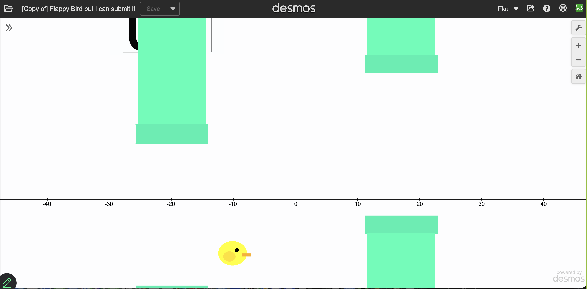

You can "code" in desmos graphing calculator. I submitted this to the global desmos art expo, and didn't win! I had no reason to do this other than my math teacher mentioned this followed by, and I quote "Now I am not into this coding stuff, but if you want to try, go for it."
Open Graph in Desmos

I am working on USA Computing Olympiad practices problems. You can see my source code of varying elegance and efficiencies
I have done a VERY TINY amount of game development. My few projects, more accurately named monstrocities, can be viewed below. I made many of these with friends. Roblox studio uses lua